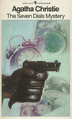
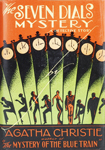
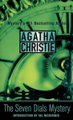
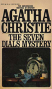
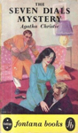
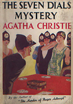
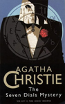
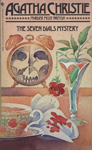
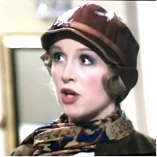

The Seven Dials Mystery was first published in the UK by William Collins & Sons on 24 January 1929 and in the US by Dodd, Mead and Company later in the same year. The UK edition retailed at seven shillings and sixpence (7/6) and the US edition at $2.00. In this novel, Christie brings back the characters from the earlier novel, The Secret of Chimneys: Lady Eileen (Bundle) Brent, Lord Caterham, Bill Eversleigh, George Lomax, Tredwell and Superintendent Battle.
The novel received mostly unfavourable reviews. One reviewer noted a change in style ("Less good in point of style") but felt the novel "maintains the author's reputation of ingenuity." Another was quite disappointed in the change in style from some of her earlier novels, saying that she had "deserted the methodical procedure of inquiry into a single and circumscribed crime for the romance of universal conspiracy and international rogues." Another felt that the story started out well, but then earned sharp criticism for the author as "she has carefully avoided leaving any clues pointing to the real criminal. Worst of all, the solution itself is utterly preposterous." In 1990, this novel was considered to have the same characters and house parties as The Secret of Chimneys "but without the same verve and cheek.".








Screen Versions
Following the success of their version of Why Didn't They Ask Evans? in 1980, The Seven Dials Mystery was adapted by London Weekend Television as a 140-minute television film and transmitted on Sunday 8 March 1981. The same team of Pat Sandys, Tony Wharmby and Jack Williams worked on the production which again starred John Gielgud and James Warwick. Cheryl Campbell also starred as "Bundle" Brent. The production was extremely faithful to the book with no major deviations to the plot or characters. Miss Marple does not appear but Lady Eileen (Bundle) helps solve the mystery in a very Marple-like fashion - even though she gets much wrong.

John Gielgud